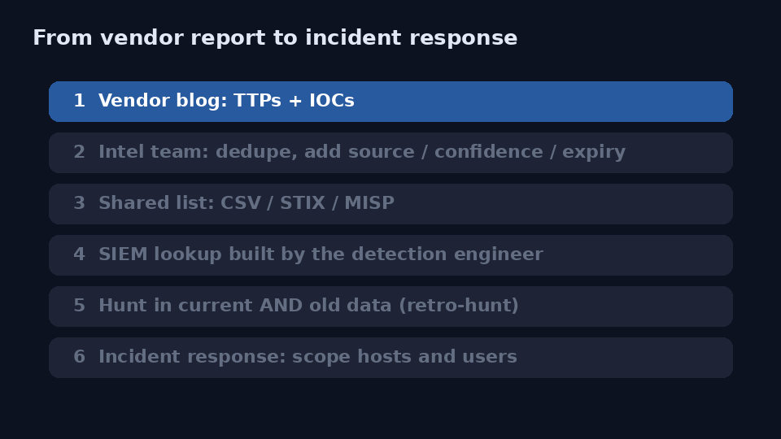
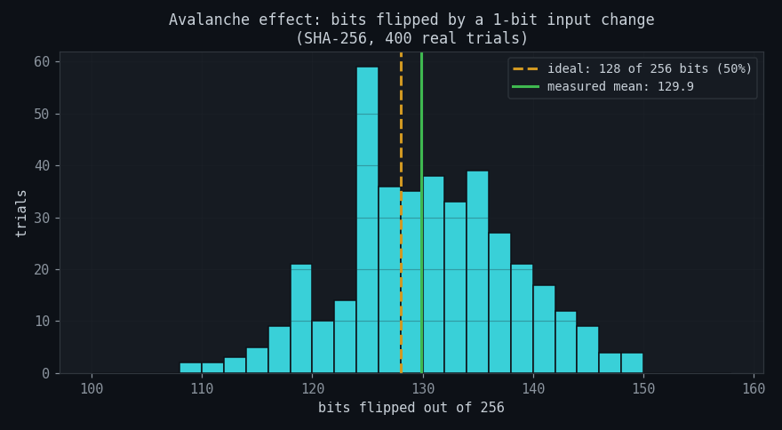
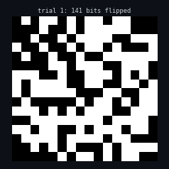
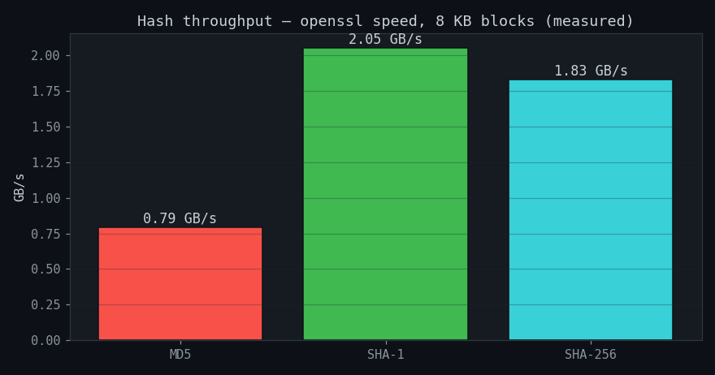
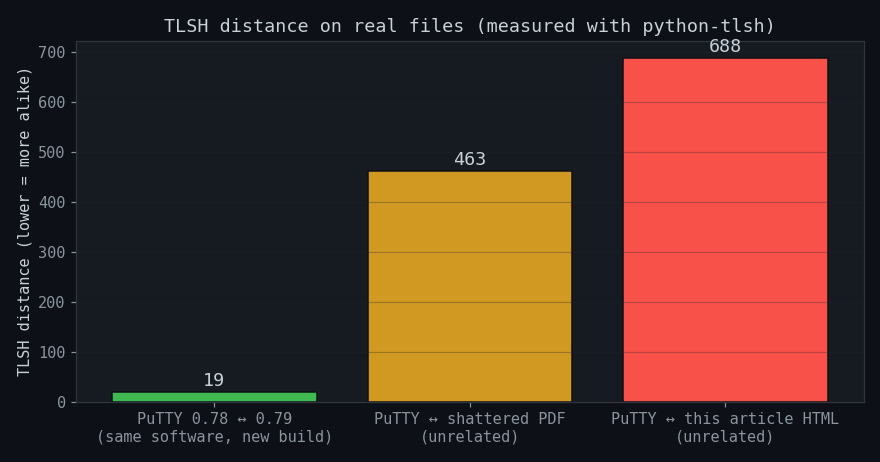
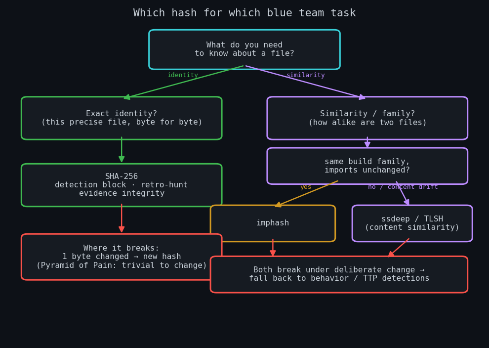
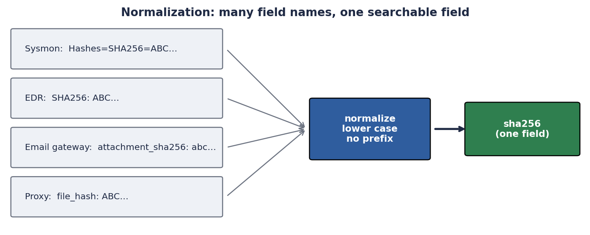
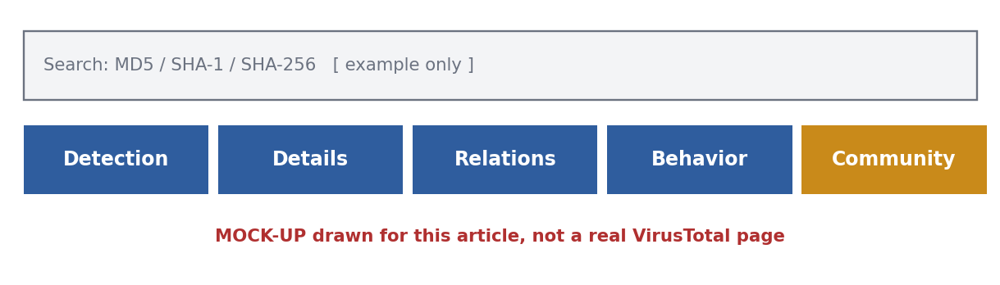
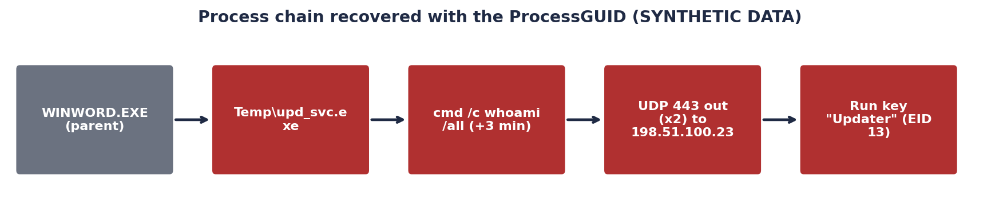

A practical research writeup: what a hash buys a blue team in daily operations, from first principles to production hunts. Every theoretical claim is paired with something you can run or check yourself.
Honesty note: all data in the examples is synthetic and labeled as such. The commands and results really ran in a sandbox, but there is no real Splunk and no real VirusTotal; the hunt logic ran as equivalent Python code, and the VirusTotal page is an illustration. No real hash from a real campaign is shown as a detection; only counts are cited.
Chapter 1: Why hashing matters in blue team operations
The research question
This writeup is a piece of practical research, not a cryptography textbook chapter. The question it answers: how much does a hash actually buy a blue team in daily operations, and where does it stop buying you anything? I follow the hash through real SOC work, from the moment a vendor publishes a report to the moment an alert reaches the analyst. The rule of the article: no theoretical claim stands alone. Every property, every number and every technique is followed by something you can run or check yourself, and anything I could not prove is marked as such.
Research questions
- Q1. What is a hash, and which of its properties does blue team work actually rely on?
- Q2. Which hash type fits which blue team task, and what does each one cost when it fails?
- Q3. How do hashes move through telemetry, intel and the SIEM before they become an alert?
- Q4. Where does hash-based detection break, and what carries the operation when it does?
The vendor blog
Start with the big picture. A vendor such as Mandiant or CrowdStrike, or any threat intel team, publishes a blog about a new campaign. Inside it you find the TTPs, meaning the techniques the attacker used, and the IOCs: domains, IP addresses and, the most important item for us today, the hashes of files.
Vendor blog (campaign report) → TTPs (behaviors) → IOCs domains · IPs · file hashes
The threat intel team
The threat intel team takes these IOCs and cleans them. It removes duplicates and records next to each one the source, the confidence and the expiry date. Then they go into a shared list. It can be a simple CSV, STIX, or a platform such as MISP. This matters, because an IOC without context turns into noise after a few months.
IOC extraction → De-duplicate → Add source · confidence · expiry → CSV / STIX / MISP
From the list to the SIEM
Next comes the detection engineer. They load the list into the SIEM as a lookup, a table that events are compared against. Then comes the threat hunter, who searches current data with the list, and old data too. If there is a match, the incident response team starts to scope it: how many machines, and where did it begin.


A hash is an identity, not a verdict
An important point from the start: a hash is the identity of an exact file, not a verdict on it. If a hash matches a known IOC, it tells you this is the same file that was seen in the campaign. It does not tell you the machine is compromised. Context does that: who ran the file, from which path, with which command line, and what it connected to afterwards.
Hash = identity of exact bytes
Context says: who ran it? From which path? What did it connect to?
Pyramid of Pain
To set our expectations: David Bianco, in his well known Pyramid of Pain talk, described hash values as the indicators with the highest confidence but very sensitive to change, even by accident. If the attacker changes one byte, the whole hash changes. We return to this in chapter 3 and look at the alternatives that last longer.

References: [1] D. Bianco, "The Pyramid of Pain" (SpeakerDeck) - https://speakerdeck.com/davidjbianco/the-pyramid-of-pain-intel-driven-detection-and-response-to-increase-your-adversarys-cost-of-operations
Article map
The map of the writeup. Chapter 2: hash basics from zero, in the terminal. Chapter 3: the hash types beyond the plain hash, and why an attacker defeats each one. Chapter 4: where hashes show up in logs. Chapter 5: the intel side. Chapter 6: the hunter side in the SIEM. Chapter 7: a full case study on a recent real campaign, and how to correlate vendor reports. Chapter 8: findings, where the evidence says hashing carries the operation and where it breaks.
- 2 · Hash basics, from zero
- 3 · Hash types and their uses
- 4 · Hashes in the logs
- 5 · The intel side
- 6 · The hunter side in the SIEM
- 7 · Case study: a recent campaign
- 8 · Findings
Chapter 2: Hash basics, from zero
Hash basics in the terminal
We start with the basics, in the terminal. We create a simple text file and compute its hash. The commands really run in the sandbox, and the file is a harmless test file. The first command is sha256sum on the file.
Sandbox terminal · harmless demo file$ echo "invoice_2026.txt demo" > demo.txt
$ cat demo.txt
invoice_2026.txt demo
$ sha256sum demo.txtWhat the output means
Look at the output: 64 hex characters. Every two characters are one byte, so 32 bytes, so 256 bits. That is SHA-256. If you run the command on the same file a million times you get exactly the same output. That means the hash is deterministic.
Sandbox terminal · harmless demo file$ sha256sum demo.txt
6d2b257dbc14f13f847be988f43ee4db7206f1f451d0f7f97789a8255cfdb9f2 demo.txt
$ sha256sum demo.txt # run it again
6d2b257dbc14f13f847be988f43ee4db7206f1f451d0f7f97789a8255cfdb9f2 demo.txt
# same input, same output: deterministicOne character changed
Now we make a very small change. We add a period at the end of the file, one character only, and compute the hash again. Did it change? Completely. I measured it in the sandbox: out of 256 bits, 141 differ, which is close to half, and out of 64 hex characters, 63 differ. This is called the avalanche effect. A tiny change in the input changes the output so much that no similarity is left.
Sandbox · measured

demo.txt (…demo)
6d2b257dbc14f13f847be988f43ee4db7206f1f451d0f7f97789a8255cfdb9f2
demo2.txt (…demo.)
7413ec07d8b92e40529d443e4715bd1a9e056053cfeeaadefeeb1b8eabac1aefOne trial is an anecdote, so I measured the distribution. I flipped one random bit in the file, 400 times, and counted how many of the 256 output bits changed each time. The measured mean is 129.9 bits, almost exactly the ideal 128, with no trial anywhere near zero. That is the avalanche effect as a measured property, not a slogan.
Sandbox · 400 real trials

Why this is useful
Why is this useful? Because a hash works as a fingerprint. If the hash matches, the two files have the same bytes. If even one character changes, you know immediately. And the hash is one-way: you cannot rebuild the file from the hash. So you can share a hash in a report without sharing the file itself.
- Deterministic: same file, same hash
- Fixed length whatever the file size
- One-way: you cannot rebuild the file from the hash
- Avalanche effect: a small change alters everything
MD5, SHA-1 and SHA-256
Now we run the three well known algorithms on the same file. MD5 gives 32 characters, SHA-1 gives 40, and SHA-256 gives 64. They all turn any file size into a fixed-length value. The difference is that the older algorithms were broken as far as collisions go, and that is what we discuss next.
Sandbox terminal · harmless demo file$ md5sum demo.txt
cbcdf11c260d4a8561e3b77b3ee507f2 demo.txt
$ sha1sum demo.txt
01e8aff618223db63050fe1dd5a0de177d126d15 demo.txt
$ sha256sum demo.txt
6d2b257dbc14f13f847be988f43ee4db7206f1f451d0f7f97789a8255cfdb9f2 demo.txtWhy SHA-1 is retired
In February 2017 a team from CWI in Amsterdam and Google announced the first SHA-1 collision, meaning two different files with the same hash. According to Google's blog, the attack needed about nine quintillion SHA-1 computations, yet it is still more than a hundred thousand times faster than brute force. NIST had already stopped allowing SHA-1 for digital signatures at the end of 2013, had deprecated it in 2011, and advised moving to SHA-2 or SHA-3.

References: [2] Google Online Security Blog, "Announcing the first SHA-1 collision" (2017-02-23) - https://security.googleblog.com/2017/02/announcing-first-sha1-collision.html
[3] NIST CSRC, "Research results on SHA-1 collisions" (2017-02-24) - https://csrc.nist.gov/news/2017/research-results-on-sha-1-collisions
What this means at work
So what does this mean at work? If an IOC comes only as MD5 or SHA-1, treat it as a first lead. Search with it, but confirm with something else: file name, path, signer, size or process behavior. And if you are the one building the list, prefer SHA-256. In chapter 7 we see that the recent Unit 42 report uses SHA-256.
| IOC comes as | Treat it as | Do |
|---|---|---|
| MD5 or SHA-1 only | Initial lead | Search it, then confirm: name, path, signer, size, behavior |
| SHA-256 | Stronger match | Still read the context before acting |
| Your own lists | Prefer SHA-256 | Record the source and date |
References: [4] Unit 42, TGR-STA-0049 custom RATs targeting Southeast Asia governments (Nov 16, 2026) - https://unit42.paloaltonetworks.com/custom-rats-target-southeast-asia-governments/
On Windows
On Windows, the matching command is Get-FileHash with the -Algorithm SHA256 option and the file name, and the output is exactly the same. You will need this command often, especially in forensics.
REFERENCE: PowerShell syntax, not run in this sandbox$ Get-FileHash -Algorithm SHA256 .\demo.txt
Algorithm Hash
--------- ----
SHA256 6D2B257DBC14F13F847BE988F43EE4DB7206F1F451D0F7F97789A8255CFDB9F2Evidence handling habit
There is a habit that separates the professional from the rest. For any file or evidence you receive, compute its hash first, record it in the case notes, work on a copy, and leave the original untouched. That way you can show the original did not change, and be sure that what you analyzed is exactly what was collected. This is the difference between an analysis you can defend and one you cannot prove.
Hash the evidence first → Record it in case notes → Work on a copy → Original stays untouched
Summary of chapter 2
To sum up the basics: a hash is a fast and exact fingerprint of one specific file. But it identifies the file, it does not judge it, and it changes with any edit. Before we leave the basics, two claims people usually take on faith get proven next: that SHA-1 collisions are real files you can download, and that hash speed is a measurable operational property.
- An exact fingerprint of one specific file
- It identifies the file, it does not judge it
- Any edit changes it
- Next: two proofs most people only read about
Proof: the SHA-1 collision, reproduced
Saying "SHA-1 is broken" is theory. Here is the practice. Google published the first public SHA-1 collision in 2017: two different PDF files with the same SHA-1. I downloaded both files from shattered.io and hashed them myself in the sandbox. The SHA-1 values are identical. The SHA-256 values are completely different. So the claim "two different files can share one SHA-1" is not something I read; it is sitting in my terminal.
Sandbox · real files from shattered.io$ sha1sum shattered-1.pdf shattered-2.pdf
38762cf7f55934b34d179ae6a4c80cadccbb7f0a shattered-1.pdf
38762cf7f55934b34d179ae6a4c80cadccbb7f0a shattered-2.pdf # identical: collision
$ sha256sum shattered-1.pdf shattered-2.pdf
2bb787a73e37352f92383abe7e2902936d1059ad9f1ba6daaa9c1e58ee6970d0 shattered-1.pdf
d4488775d29bdef7993367d541064dbdda50d383f89f0aa13a6ff2e0894ba5ff shattered-2.pdf # different
The operational consequence: a hash algorithm is a trust decision. Blocking or whitelisting by SHA-1 in 2026 means an attacker can craft a second file with the same value. The fix is not effort, it is the algorithm: the same files under SHA-256 have nothing in common.
References: [2] Google Online Security Blog, "Announcing the first SHA-1 collision" (2017) - https://security.googleblog.com/2017/02/announcing-first-sha1-collision.html
[15] SHAttered, collision files - https://shattered.io/
Speed is an operational property
One property nobody mentions in the textbook: throughput decides where a hash can live in the pipeline. An EDR agent that hashes every executed file, or a forensic tool that hashes a full disk image, works under a time budget. So I measured. On this machine, with hardware SHA instructions, SHA-1 and SHA-256 both run near 2 GB/s, while MD5, the oldest of the three, is the slowest at about 0.8 GB/s. Hardware acceleration flipped the textbook expectation that the older algorithm is faster.
Sandbox · openssl speed, measured$ openssl speed -seconds 2 md5 sha1 sha256 # 8192-byte blocks
md5 794952.51k per second (~0.79 GB/s)
sha1 2049330.68k per second (~2.05 GB/s)
sha256 1828150.84k per second (~1.83 GB/s)
So "SHA-256 is too expensive for scale" does not hold on modern CPUs. Choose the algorithm by collision resistance and ecosystem support, not by speed fear.
Chapter 3: Hash types and where each one earns its place
The hash is easy to change
Today we say the hash is easy to change. Let us see it in numbers. Here is a synthetic file, and we made two copies. In the first we changed only fifteen characters out of three thousand words, and in the second we changed 300 characters. There is also a third, unrelated file. We compute SHA-256 for each: the four values are completely different.
SYNTHETIC DATA| File | Change | SHA-256 (first 24 hex) |
|---|---|---|
| base | — | 8c386643cf50532032dcce89… |
| variant A | 15 chars edited | b09a9a9cc859d039c4f2ab16… |
| variant B | 300 chars edited | fb997577a03dca70cd99d49f… |
| unrelated | — | a472c477d609cffea818ab4a… |
What Bianco said
This is exactly what David Bianco said in the Pyramid of Pain: hashes are the highest-confidence indicators, but sensitive to change, even by accident. In practice it means that if the attacker recompiles or adds a byte, the old IOC stops matching even a near copy.
Hashes: highest confidence
But very sensitive to change, even by accident
References: [1] D. Bianco, "The Pyramid of Pain" (SpeakerDeck) - https://speakerdeck.com/davidjbianco/the-pyramid-of-pain-intel-driven-detection-and-response-to-increase-your-adversarys-cost-of-operations
imphash
That is why other types appeared. The first is imphash. Mandiant explained it in an early article: a hash is computed from the names of the libraries and APIs the file imports, in order. The order of the imports comes from the order of the code at link time, so samples from the same family often share the same value. Mandiant used it to track the backdoors each group prefers.
PE import table (DLL + API names, in order) → Hash of that list → imphash (related samples often share it)
References: [6] Mandiant, "Tracking Malware with Import Hashing" (2014) - https://cloud.google.com/blog/topics/threat-intelligence/tracking-malware-import-hashing/
The Mandiant example
To see that it is not magic, the same Mandiant article has an example: a simple piece of code was compiled and gave an imphash, then the order of two functions in the code was changed and the imphash came out completely different. Both values are on screen from the article itself. So an attacker who knows the idea can reorder the code and get past the imphash.
Original source order
0c6803c4e922103c4dca5963aad36ddf
Two functions reordered
b8bb385806b89680e13fc0cf24f4431eReferences: [6] Mandiant, "Tracking Malware with Import Hashing" (2014) - https://cloud.google.com/blog/topics/threat-intelligence/tracking-malware-import-hashing/
imphash on my machine
Here is a live example on my machine: these are benign PE files that ship with the pip tool, and we compute imphash for them with the pefile library. Notice that each file has a different value. The point is the method of computing, not that these are malware samples. VirusTotal also added imphash in 2014, after Mandiant wrote about it.
Benign PE files · pefile · method demo only$ python3 -c "import pefile;print(pefile.PE(f).get_imphash())" # f = benign pip launcher stubs
t32.exe imphash 5e24f42b46c247f13d78f0f21a4a2bf7
t64.exe imphash c51d659b4b1142d4af3795d09f1d63f7
w32.exe imphash af457a899dff0be8f96c758b66fd5f37References: [7] VirusTotal blog, "VirusTotal imphash" (2014) - https://blog.virustotal.com/2014/02/virustotal-imphash.html
[6] Mandiant, "Tracking Malware with Import Hashing" (2014) - https://cloud.google.com/blog/topics/threat-intelligence/tracking-malware-import-hashing/
imphash survives a version bump: proof on real binaries
The pip files show the method. Here is the property that matters, proven on real software. I downloaded two official PuTTY builds, versions 0.78 and 0.79, and hashed both. Their SHA-256 values share not a single hex character: as exact hashes they are strangers. Their imphash values are identical, because the import table did not change between the two builds. This is exactly why intel teams track families by imphash: the exact hash dies with every rebuild, the imphash survives it.
Sandbox · real PuTTY binaries · pefile$ sha256sum putty-0.78.exe putty-0.79.exe
fc6f9dbdf4b9f8dd1f5f3a74cb6e55119d3fe2c9db52436e10ba07842e6c3d7c putty-0.78.exe
e53c379d95e95706c5a2c4d6cd609857368a3bf14f28d7e67f6e3f8dfce6d486 putty-0.79.exe # no common hex chars
$ python3 -c "import pefile; [print(f, pefile.PE(f).get_imphash()) for f in ('putty-0.78.exe','putty-0.79.exe')]"
putty-0.78.exe 69573714e11441683ea863c40a1c0d54
putty-0.79.exe 69573714e11441683ea863c40a1c0d54 # identical imphashReferences: [16] PuTTY official site - https://www.chiark.greenend.org.uk/~sgtatham/putty/
[6] Mandiant, "Tracking Malware with Import Hashing" (2014) - https://cloud.google.com/blog/topics/threat-intelligence/tracking-malware-import-hashing/
Fuzzy hashes
The third type is fuzzy hashes, such as ssdeep and TLSH. They do not say whether it is the same file or not. They say how similar two files are. TLSH gives you a distance between two files: the lower the number, the more alike the files. According to the TLSH documentation, it really is a distance metric, and that is what makes it fast to find the nearest items in large data.
- ssdeep and TLSH: how similar are the two files?
- TLSH gives a distance: lower = more alike
- TLSH is a distance metric: fast search in large data
References: [8] TLSH, papers and technical overview - https://tlsh.org/papers.html
TLSH on the synthetic files
I tried it on the same synthetic files with the real TLSH library. The copy with 15 characters changed came out at distance 5 from the original. The copy with 300 characters changed came out at distance 7. The unrelated file came out at distance 44. So the same family is very close, and the stranger is clearly far, even though the SHA-256 of all four is completely different.
SYNTHETIC DATA · real TLSH library
| File | Change | TLSH distance |
|---|---|---|
| base | — | 0 |
| variant A | 15 chars edited | 5 |
| variant B | 300 chars edited | 7 |
| unrelated | — | 44 |
Synthetic numbers: an example of the idea, not thresholds to apply to real samples
TLSH on the same real binaries
Same test, real files. The TLSH distance between PuTTY 0.78 and 0.79 is 19: clearly the same family. Between PuTTY and the shattered PDF it is 463, and between PuTTY and the HTML of this article it is 688: clearly unrelated. The synthetic numbers above illustrated the idea; these numbers are measured on files anyone can download.
Sandbox · real files · python-tlshTLSH distance putty-0.78 vs putty-0.79 = 19 same family
TLSH distance putty-0.78 vs shattered-1.pdf = 463 unrelated
TLSH distance putty-0.78 vs article.html = 688 unrelated
Limits of fuzzy hashes
But note: this is synthetic data, and these numbers illustrate the idea, they are not thresholds to apply to real samples. There is also a paper on the TLSH site that tests how fuzzy hashes can be attacked with deliberate changes to a file. So even these are not a guarantee.
- These numbers are synthetic: an example, not thresholds
- A paper tests how fuzzy hashes can be attacked with deliberate changes
- Even these are not a guarantee
References: [8] TLSH, papers and technical overview - https://tlsh.org/papers.html
Use each one where it fits
So use each type where it fits, and know what its failure costs. A detection built on a hash alone dies quietly the day the attacker rebuilds. A good analyst pairs every hash with the behavior around it.

| Blue team task | Hash type | Why it fits | How it fails |
|---|---|---|---|
| Detection / blocking | Exact SHA-256 | Zero ambiguity on the exact file | One recompile kills it silently |
| Retro-hunt in old data | Exact SHA-256 | Deterministic join against historical logs | Only finds this exact build |
| Evidence integrity | SHA-256 (never MD5/SHA-1) | Collision resistance is the legal point | Broken algorithms can be forged |
| Family clustering / tracking | imphash | Survives rebuilds with same imports (PuTTY proof) | Import reorder defeats it (Mandiant example) |
| Variant discovery at scale | ssdeep / TLSH | Distance metric: nearest-neighbor search | Deliberate content injection attacks |
| When all hashes change | Behavior / TTP detections | Attacker must change how they operate | Higher cost to build and tune |
Chapter 4: Hashes in the logs
Hashes in realistic data
Let us look at the hash in realistic-looking data. The data we use in this chapter and in chapter 6 is synthetic, generated by me: about five thousand Sysmon events across thirty-five machines. It is labeled synthetic on screen so nobody mistakes it for real data.
SYNTHETIC DATA5,003 events · 35 hosts
JSONL · all names and hashes are made up
Sysmon Event ID 1: process creation
This is Sysmon Event ID 1, process creation. The event records the Image, which is the file path, the CommandLine, the ParentImage, meaning who started the process, and also the Hashes of the process file. According to Microsoft's documentation, Sysmon computes SHA1 by default, and you can choose MD5, SHA256 or IMPHASH, or all of them.
SYNTHETIC DATA$ head -1 sysmon_synth.jsonl | python3 -m json.tool
{
"_time": "2026-10-20T08:00:00Z",
"host": "WS-014",
"user": "user9",
"EventCode": 1,
"Image": "C:\\Program Files\\Teams\\Teams.exe",
"ParentImage": "C:\\Windows\\explorer.exe",
"CommandLine": "Teams.exe",
"Hashes": "SHA256=169AA62AAFE0F3ED153CC37289C83784E0DC3380386230A6612B15C6E18957FF,IMPHASH=052DEAA50B705F7EFCFC77249D7FD6F8",
"ProcessGuid": "{d1f409db03ca4093}"
}References: [5] Microsoft Learn, Sysinternals Sysmon - https://learn.microsoft.com/en-us/sysinternals/downloads/sysmon
What does your config log?
Here is the first question in any hunt: what does your config record? If it was left at the default, your logs hold SHA1 only, and you come with an IOC list that is all SHA-256. You search, find nothing, and the truth is that you are comparing two different things. The suggested setting here is HashAlgorithms set to SHA256 and IMPHASH.
| Per Microsoft docs | Value |
|---|---|
| Process-image hashes | SHA1 (the default), MD5, SHA256 or IMPHASH |
| HashAlgorithms option | MD5, SHA1, SHA256, IMPHASH, or * for all |
| Your IOC list is SHA-256 but logs only have SHA1 | No match, and no error |
| Suggested here | HashAlgorithms = SHA256 + IMPHASH |
References: [5] Microsoft Learn, Sysinternals Sysmon - https://learn.microsoft.com/en-us/sysinternals/downloads/sysmon
ProcessGUID
There is another important field called ProcessGUID. It is a unique value for one process, and it is very useful for linking events. You can say: this process, which processes came out of it, which network connections did it make, and which registry keys did it write. We use it in practice in chapter 6.
Process (Event 1) → Child processes → Network (Event 3, TCP/UDP) → Registry (Event 13)
References: [5] Microsoft Learn, Sysinternals Sysmon - https://learn.microsoft.com/en-us/sysinternals/downloads/sysmon
Different sources, different field names
The same file can show up in more than one source. In the EDR as a file-write event, in the email gateway as an attachment, in the proxy as a download, and in Sysmon as a process. The problem is that each source names the field differently. This one says Hashes, that one SHA256, another file_hash, another attachment_sha256. The format of the value differs too: it can be upper or lower case, and it may have the algorithm name in front.
SYNTHETIC DATA
| Source | Field name | Value shape |
|---|---|---|
| Sysmon | Hashes | SHA256=6D2B…,IMPHASH=… |
| EDR file-write | SHA256 | upper case |
| Mail gateway | attachment_sha256 | lower case |
| Proxy | file_hash | plain hex |
Normalization
The detection engineer's job here is normalization: one field name, lower case, and a value without a prefix. Then any IOC you search for is searched in the one normalized field across all sources at once. Without this step you miss matches, and the problem is that you do not know you missed them.
- One normalized field name: sha256
- Lower case
- Value without prefix
- One search across all sources
- Without this: the match is missed and you never know
Limits of the hash
There is a limit we must state honestly. A hash is computed on a file. If execution happens only in memory, or the file is deleted before anyone hashes it, you will not find a hash at all. So the hash is a useful tool, not a complete safety net, and that is why the next chapters cover what comes after it.
- A hash is computed on a file
- In-memory execution only = no hash
- File deleted before anyone hashed it = no hash
- A useful tool, not a complete safety net
Chapter 5: The intel side
Where IOCs come from
Now the intel side: the people who produce the IOCs, and how they are read. Any decent vendor report ends with an Indicators of Compromise section. In the recent Unit 42 report you find this section grouped by SHA-256 per malware name and variant. The Kaspersky report groups them by component: loader, payload, backdoor. This organization matters, because you can tell which part of the chain each hash belongs to.
| Report (read) | Hash type | Grouped by | Count in page text |
|---|---|---|---|
| Unit 42, TGR-STA-0049 (Nov 16, 2026) | SHA-256 | Malware variant | 66 unique |
| Securelist, ShadowCloud (Nov 17, 2026) | MD5 | Component (loaders, payload, backdoors...) | 14 unique |
References: [4] Unit 42, TGR-STA-0049 custom RATs targeting Southeast Asia governments (Nov 16, 2026) - https://unit42.paloaltonetworks.com/custom-rats-target-southeast-asia-governments/
[9] Kaspersky Securelist, Operation ShadowCloud part 1 (Nov 17, 2026) - https://securelist.com/operation-shadowcloud-gitdoor/122004/
IOCs with context
The analyst takes these IOCs from the sample itself: hashes, domains, IP addresses, file paths, mutex names. But more important than the value is the context you record next to it: source, first seen, confidence and expiry. An IOC without context becomes noise after two months. On screen is a synthetic CSV table with these columns.
SYNTHETIC DATA| sha256 | source | confidence | added | expires |
|---|---|---|---|---|
| 034f79fa067ff7… | SYNTHETIC-feed | high | 2026-11-17 | 2027-02-17 |
| 170c5f7b315edf… | SYNTHETIC-feed | high | 2026-11-17 | 2027-02-17 |
| 771a386f146804… | SYNTHETIC-feed | low | 2026-11-17 | 2027-02-17 |
| 33be69b8e58373… | SYNTHETIC-feed | medium | 2026-11-17 | 2027-02-17 |
CSV and MISP attribute
IOCs are shared in more than one format. Simple CSV, STIX, or a platform such as MISP. The MISP documentation describes the core format as simple JSON for exchanging events and attributes. Attributes have types, including sha256, and filename|sha256 in one value. On screen is our same row turned into a simplified attribute form, to make the picture clear.
SYNTHETIC DATA$ head -3 data/ioc_hashes.csv | cut -c1-90
sha256,source,confidence,added
034f79fa067ff77b8182ddd1980c24bd2907baa9edf3148658ab7a9eecb52e98,SYNTHETIC-feed,high,2026-11-17
170c5f7b315edf75cff5d8d8b7111125924fc70e92d61193454ba1096d9ee676,SYNTHETIC-feed,high,2026-11-17
# simplified, MISP-style attribute (SYNTHETIC)
{"type": "sha256",
"value": "034f79fa067ff77b8182...",
"comment": "SYNTHETIC-feed, confidence high"}References: [10] MISP data models - https://www.misp-project.org/datamodels/
VirusTotal file page (illustration)
VirusTotal is one of the best-known places to look up a hash. The page on screen is labeled mock-up, meaning I drew it, it is not a real page. It has the familiar tabs: Detection, Details, Relations, Behavior and Community. You can search with an MD5, SHA-1 or SHA-256, and they all work in the search box according to their documentation.
MOCK-UP drawn by me, not a real VirusTotal page
Detection → Details → Relations → Behavior → Community
References: [11] VirusTotal docs, VirusTotal Intelligence introduction - https://docs.virustotal.com/docs/virustotal-intelligence-introduction
The Community tab
The Community tab matters. On every file or URL there is a comments section. VirusTotal encourages users to review samples and comment, because it helps others. There are also agreed tags so comments can be searched in a uniform way. And there is a reputation system from minus one hundred, completely malicious, to one hundred, completely benign. But note: these comments are people's opinions. Treat them as a lead, not as a fact.
- Comments on every file or URL
- Agreed tags for searching
- Reputation: from -100 (malicious) to 100 (benign)
- People's opinion: treat it as a lead
References: [12] VirusTotal docs, Comments - https://docs.virustotal.com/docs/comments
Advanced search
There are also advanced search tools. In the VirusTotal documentation of file search modifiers there is a modifier called imphash that returns all PE files with the same import hash, and ssdeep for similar files. They help when you have one hash and want to find its siblings. And the mere presence of these modifiers in the documentation does not tell you they are available on every account. Check what you are entitled to.
| Modifier | Applies to | What it returns |
|---|---|---|
| imphash: | PE files | Files with the given import hash (same family candidates) |
| ssdeep: | Any file type | Files similar to the given ssdeep hash |
Present in the documentation does not mean available on every account. Check your entitlements.
References: [13] VirusTotal docs, File search modifiers - https://docs.virustotal.com/docs/file-search-modifiers
Privacy warning
This is an important work warning, from the VirusTotal documentation itself: any IoC you submit or ask about from the interface gets added to the dataset and becomes available to the community. So do not submit anything with sensitive or personal data. A company-internal file should not be uploaded. A hash on its own is usually much lighter, but check your company policy before you ask about anything from a real incident.
WARNINGDo not submit sensitive data
Any IoC submitted from the interface is added to the dataset and is available to the community
References: [11] VirusTotal docs, VirusTotal Intelligence introduction - https://docs.virustotal.com/docs/virustotal-intelligence-introduction
MalwareBazaar
Another free and useful source: MalwareBazaar from abuse.ch. It is a project that shares malware samples with the security community, AV vendors and threat intel providers. The API needs an Auth-Key, which you get free from auth.abuse.ch. Alongside it are other sources such as open feeds that publish IOCs.
- Shares malware samples with the community, AV vendors and CTI providers
- The API needs an Auth-Key
- The Auth-Key is free from auth.abuse.ch
References: [14] abuse.ch, MalwareBazaar (GitHub) - https://github.com/abusech/MalwareBazaar/
Golden rules
A golden rule in intel: do not trust a single source. Confirm with at least two. Record the provenance, meaning who said what and when. Add confidence. Add expiry, because an IOC that is a year old is not like one that is a week old. And in chapter 7 we see that even vendors' own lists can contain things that should not be blocked.
- Do not trust a single source
- Record provenance: who said what and when
- Add confidence
- Add expiry
Chapter 6: The hunt in the SIEM
The IOC list as a lookup
We have reached the hunter side. We have an IOC list from the feed, synthetic of course. It has five hashes, with the source and the confidence next to each. We load it as a lookup and match it against five thousand Sysmon events. Notice that the screen says: SPL-style query, executed with equivalent Python logic, because Splunk itself is not available to me. The results you see are the output of a real run, not drawn.
SYNTHETIC DATA$ cut -c1-18,65- data/ioc_hashes.csv
sha256,source,conf…d
034f79fa067ff77b81…,SYNTHETIC-feed,high,2026-11-17
170c5f7b315edf75cf…,SYNTHETIC-feed,high,2026-11-17
771a386f1468040bfb…,SYNTHETIC-feed,low,2026-11-17
33be69b8e58373d32e…,SYNTHETIC-feed,medium,2026-11-17
0f7639d585cafecdaf…,SYNTHETIC-feed,medium,2026-11-17The query
The query does three things. First, it extracts the SHA256 from the Hashes field with a regex. Second, it turns it into lower case so it matches the lookup, which is exactly the normalization part from chapter 4. Third, it joins with the IOC list and returns only the matches.
SPL-style · run by equivalent Python logic · SYNTHETICSPL-style (executed here by equivalent Python logic):
index=sysmon EventCode=1
| rex field=Hashes "SHA256=(?<sha256>[A-Fa-f0-9]{64})"
| eval sha256=lower(sha256)
| lookup ioc_hashes sha256 OUTPUT source confidence
| where isnotnull(source)638 match rows: what is this?
The result of the run: 638 matching rows. A big number, and surely not 638 intrusions. This is the first real lesson: the hunter does not look at the count, the hunter looks at the distribution. When I grouped the rows by hash I found two things: only two rows with high confidence, and 636 rows on one hash with low confidence, spread across all thirty-five machines.
Real output of the equivalent logic · SYNTHETIC DATA

| Group (by sha256) | Rows | Hosts | Confidence |
|---|---|---|---|
| hash A: C:\Users\...\Temp\upd_svc.exe | 1 | 1 | high |
| hash B: C:\ProgramData\vmsync\vmsync.exe | 1 | 1 | high |
| hash C: C:\Program Files\AdminTools\remotehelp.exe | 636 | 35 | low |
Do not look at the count. Look at the distribution.
The hash on every machine
The hash found on all thirty-five machines turned out to be remotehelp.exe, from Program Files, an internal admin tool in the synthetic data. So it is dual-use or a wrong entry in the feed. The decision here is not made on the hash alone: we look at the path, the parent, the command line, and whether this tool is known to us. Usually we make an exception for it, tell the feed owner, and lower its priority.
SYNTHETIC DATA| Check | Finding |
|---|---|
| Path | C:\Program Files\AdminTools\ (not Temp/AppData) |
| Parent | services.exe |
| Known internal tool? | Yes (in this synthetic scenario) |
| Decision | Exception + tell the feed owner + lower priority |
The first row: WS-014
Back to the two high rows. The first: machine WS-014, user user7, file upd_svc.exe, running from AppData Local Temp, and its parent is Word. This is very worrying context, because Word should not launch an exe from Temp. The match told us what the file is, and the context told us it matters.
SYNTHETIC DATA| Field | Value |
|---|---|
| Time | 2026-11-02 14:12:07Z |
| Host / user | WS-014 / user7 |
| Image | C:\Users\user7\AppData\Local\Temp\upd_svc.exe |
| Parent | WINWORD.EXE |
| IOC confidence | high |
Pivot on ProcessGUID
We use the ProcessGUID to pivot. The processes that came out of upd_svc.exe: one cmd process running whoami with the all switch, about three minutes later. The network connections, Sysmon Event 3: two UDP connections on port 443 to address 198.51.100.23. That is an address from the range reserved for documentation, so not a real address. And UDP on 443 suggests QUIC, and we see in chapter 7 why that matters.
SYNTHETIC DATA# pivot on ProcessGuid {a1b2c3d4e5f60718} (query logic run on the synthetic events)
EID 1 cmd.exe /c whoami /all (child, +3 min)
EID 3 udp -> 198.51.100.23:443 (198.51.100.0/24 = documentation range)
EID 3 udp -> 198.51.100.23:443 (198.51.100.0/24 = documentation range)
EID 13 Updater -> Run key (persistence)References: [5] Microsoft Learn, Sysinternals Sysmon - https://learn.microsoft.com/en-us/sysinternals/downloads/sysmon
The full chain
And the persistence: Sysmon Event 13, a write to a Run key in the registry named Updater, pointing to the same file in Temp. So we have a full chain: Word launched the file, the file asked for the user identity, connected out over UDP, and wrote itself into the Run key. That is far stronger than any hash match.
SYNTHETIC DATA
References: [5] Microsoft Learn, Sysinternals Sysmon - https://learn.microsoft.com/en-us/sysinternals/downloads/sysmon
The second row: SRV-03
The second row: machine SRV-03, account svc_backup, file vmsync.exe from ProgramData, and the parent is services.exe, so it runs as a service. This needs a different investigation: what is this service, who installed it, and is there a change ticket? Without more context we cannot say it is malicious, but it is at least a file with a high-confidence IOC.
SYNTHETIC DATA| Field | Value |
|---|---|
| Time | 2026-11-09 03:40:00Z |
| Host / account | SRV-03 / svc_backup |
| Image | C:\ProgramData\vmsync\vmsync.exe |
| Parent | services.exe (runs as a service) |
| To ask | Who installed it? Is there a change ticket? |
Retro-hunt
And there is the retro-hunt. The IOC was added to the feed on November 17. But the activity on WS-014 was on November 2, fifteen days before. And the activity on SRV-03 was on November 9, eight days before. If we had searched only new data, we would have missed both. That is why a new IOC is also searched against old data.
SYNTHETIC DATA
After the hunt
When you finish: you scope it, meaning how many machines and which users. You contain. You collect any new hashes or domains you found and send them back to intel, so the circle closes. And you write all of this with the confidence, what is confirmed and what is inference. That is the real hunter's work.
Scope (hosts, users) → Containment → New hashes/domains back to intel → Write-up with confidence
Chapter 7: Case study: correlating Unit 42 and ShadowCloud
Case study: a recent campaign
Now the practical part: a case study on a recent campaign. We have two reports from two different vendors in the same week. The first is from Unit 42, published November 16, 2026, about a group they track as TGR-STA-0049, which has other names at other vendors: REF7707, Earth Alux and Ink Dragon. The second is from Kaspersky, published November 17, called Operation ShadowCloud. All the information you hear from these two reports has its source on screen, and we do not republish the real hashes, we only point to them.
Public reports, cited · real hashes not re-hostedTGR-STA-0049 + Operation ShadowCloud
Unit 42 (Nov 16, 2026) and Kaspersky (Nov 17, 2026)
References: [4] Unit 42, TGR-STA-0049 custom RATs targeting Southeast Asia governments (Nov 16, 2026) - https://unit42.paloaltonetworks.com/custom-rats-target-southeast-asia-governments/
[9] Kaspersky Securelist, Operation ShadowCloud part 1 (Nov 17, 2026) - https://securelist.com/operation-shadowcloud-gitdoor/122004/
Who is this?
We start with who they are. TGR-STA-0049, according to Unit 42, has been active since at least March 2023, and targets governments in Southeast Asia, South America and Europe. Earlier it used a backdoor called Squidoor. In the latest campaign, from mid-2025, two new malware families appeared: the PerfectPioneer RAT, seen in July 2025, and its modular successor KUKURAT, seen since March 2026.
| Fact (per Unit 42) | Value |
|---|---|
| Also tracked as | REF7707, Earth Alux, Ink Dragon |
| Active since | At least March 2023 |
| Targets | Government: SE Asia, South America, Europe |
| Earlier backdoor | Squidoor (FINALDRAFT) |
| Current campaign | PerfectPioneer RAT (Jul 2025), KUKURAT (Mar 2026) |
References: [4] Unit 42, TGR-STA-0049 custom RATs targeting Southeast Asia governments (Nov 16, 2026) - https://unit42.paloaltonetworks.com/custom-rats-target-southeast-asia-governments/
Initial access
Getting into the network: according to Unit 42, the main route is exploiting unpatched Exchange and web servers and planting web shells, among them ASPXSpy, Godzilla and Suo5. The second route is phishing, with deceptive PDF files and domains that look like government sites. And that is the first lesson: the hash of any of these files will not protect you. What protects you is patching, and monitoring for web shells.
| Vector | Details (per Unit 42) |
|---|---|
| Primary | Exploit unpatched Exchange / web servers, drop web shells (ASPXSpy, Godzilla, Bysunue.aspx, Suo5) |
| Secondary | Phishing: decoy PDFs, look-alike government domains |
The hash of one of these files will not protect you. Patching and monitoring will.
References: [4] Unit 42, TGR-STA-0049 custom RATs targeting Southeast Asia governments (Nov 16, 2026) - https://unit42.paloaltonetworks.com/custom-rats-target-southeast-asia-governments/
PerfectPioneer
On to the malware. PerfectPioneer is written in Go, and six variants were seen, with names such as newhttp3, PerfectRat and Pioneer. It is launched in three ways: DLL side-loading, meaning a legitimate modified file with a malicious DLL; a decoy installer that runs, for example, a GlobalProtect installer to cover the launch; or phishing with a file disguised with a PDF icon. It talks to the C2 over HTTP/3 and falls back to HTTP/2 if that fails.
| Aspect | Per Unit 42 |
|---|---|
| Language | Go |
| Variants | Six: newhttp3, PerfectRat, Pioneer, RatAAkk-tt, rat_http3_ls, rat_http3_cc |
| Execution | DLL side-loading · decoy installers · phishing with PDF-icon executables |
| C2 | HTTP/3, falls back to HTTP/2 |
References: [4] Unit 42, TGR-STA-0049 custom RATs targeting Southeast Asia governments (Nov 16, 2026) - https://unit42.paloaltonetworks.com/custom-rats-target-southeast-asia-governments/
The correlation point
There is a point that helps correlation in particular. Unit 42 says the URL endpoints used by PerfectPioneer, such as register, heartbeat, tasks and result, are the same ones KUKURAT used later, and that links the two families to one line of development. See the difference: the hashes changed completely between the two families, but the C2 behavior stayed the same. A live example of why tracking by behavior lasts longer than the hash.
| PerfectPioneer (newhttp3) C2 endpoint | Usage |
|---|---|
| /agent/register | Register a new agent |
| /agent/heartbeat | Heartbeat to C2 |
| /agent/tasks | Get tasks |
| /agent/result | Send task result |
Unit 42: KUKURAT uses the same endpoints. The hashes changed, the behavior did not.
References: [4] Unit 42, TGR-STA-0049 custom RATs targeting Southeast Asia governments (Nov 16, 2026) - https://unit42.paloaltonetworks.com/custom-rats-target-southeast-asia-governments/
KUKURAT
KUKURAT is written in C++ and is a fully modular framework. Almost all its capabilities are loaded as DLL modules from the C2 directly into memory when needed, and it supports at least twelve modules. That means the main file itself does not contain the advanced capability code. This ties back to chapter 4: if a module is loaded only in memory and never written to disk, there is no file hash to compute. Here you need EDR and memory analysis, not only IOC lists.
- C++ · fully modular
- 12+ DLL modules loaded from the C2 into memory
- The main file has no advanced capability code
- No write to disk = no file hash
References: [4] Unit 42, TGR-STA-0049 custom RATs targeting Southeast Asia governments (Nov 16, 2026) - https://unit42.paloaltonetworks.com/custom-rats-target-southeast-asia-governments/
Camouflage
Among the things the report mentions: KUKURAT has a heuristic camouflage engine that generates normal-looking activity on three fronts: network, registry and files. It makes ten fake HTTP requests to well-known domains, writes, reads and deletes a Chrome-like key, and creates random temporary files in temp and deletes them right away. So part of what you see in the logs is deliberate noise.
| Axis | Per Unit 42 |
|---|---|
| Network | 10 decoy HTTP requests per cycle to a hard-coded list of 15 popular sites |
| Registry | Mimics Chrome browser activity (write, read back, delete) |
| Files | Random temp files created and deleted immediately |
Part of what you see in the logs is deliberate noise.
References: [4] Unit 42, TGR-STA-0049 custom RATs targeting Southeast Asia governments (Nov 16, 2026) - https://unit42.paloaltonetworks.com/custom-rats-target-southeast-asia-governments/
Lateral movement and credentials
After it gets in: lateral movement. Unit 42 says the most prominent method is tampering with domain log-on scripts. After compromising the domain controller, it installs a malicious log-on script, so each user who logs in runs the script and downloads KUKURAT. It also uses PsExec, WMI and WinRM. It steals credentials by dumping LSASS through comsvcs.dll, by DCSync, and with tools such as Mimikatz, ProcDump and SharpDPAPI.
Compromise the domain controller → Malicious log-on script → Runs when users log on → Downloads KUKURAT
References: [4] Unit 42, TGR-STA-0049 custom RATs targeting Southeast Asia governments (Nov 16, 2026) - https://unit42.paloaltonetworks.com/custom-rats-target-southeast-asia-governments/
Exfiltration
In exfiltration: PDF, DOCX, XLSX and PNG files, and it targets email as well. From an Exchange server it runs PowerShell commands that look for accounts with ApplicationImpersonation, and if it finds none, it loops over all mailboxes and gives a compromised account FullAccess. That is exactly what we can turn into a behavior detection.
- PDF · DOCX · XLSX · PNG
- Checks accounts with ApplicationImpersonation on Exchange
- If none: FullAccess on all mailboxes in a loop
- Turn it into a behavior detection
References: [4] Unit 42, TGR-STA-0049 custom RATs targeting Southeast Asia governments (Nov 16, 2026) - https://unit42.paloaltonetworks.com/custom-rats-target-southeast-asia-governments/
Step 1 and 2: collect and extract
Now we put it together. Step one: collect. We gather all reports on the campaign and record the source, date and link. Step two: extract. The Unit 42 report has 66 SHA-256 values grouped by variant. The Kaspersky report has MD5 values grouped by component. We record them in one table: type, family, component, source, date, confidence.

1. Collect (sources + dates + URLs) → 2. Extract 66 SHA-256 / 14 MD5 → 3. Normalize one table
References: [4] Unit 42, TGR-STA-0049 custom RATs targeting Southeast Asia governments (Nov 16, 2026) - https://unit42.paloaltonetworks.com/custom-rats-target-southeast-asia-governments/
[9] Kaspersky Securelist, Operation ShadowCloud part 1 (Nov 17, 2026) - https://securelist.com/operation-shadowcloud-gitdoor/122004/
Different hash types
A real problem here: SHA-256 in one report and MD5 in the other. You cannot join directly. The fix is to get the other hashes for these files from a source such as VirusTotal or MalwareBazaar and standardize on SHA-256. That needs an account and an API key, and the care we mentioned: do not send anything sensitive to public sources. And in this writeup I did not do this step on the real hashes.
| Report | Hash type | Length |
|---|---|---|
| Unit 42 | SHA-256 | 64 hex chars |
| Securelist | MD5 | 32 hex chars |
No direct join. Fix: enrich to SHA-256 from VirusTotal or MalwareBazaar. (Not done on the real hashes here.)
Step 3: overlap
Step three: overlap. We compare the two reports. Both target governments in Asia. Both use DLL side-loading. But the way in differs: Unit 42 says Exchange exploitation and web shells, and Kaspersky says the entry point is not known exactly. The C2 differs too: HTTP/3 in one, and SharePoint, GitHub and Ably in the other. And from what I read, no shared IOC is mentioned between the two reports, and neither report says the two campaigns are the same actor.

| Unit 42 | Securelist | |
|---|---|---|
| Targets | Gov: SE Asia (+ S. America, Europe) | Asia and Africa, mostly gov |
| DLL side-loading | Yes | Yes (start.exe, javaw.exe, pythonw.exe + loaders) |
| C2 | HTTP/3 (QUIC) | SharePoint, GitHub, Ably |
| Entry | Exchange exploits, phishing | Unknown (MeshAgent) |
| Shared IOCs stated | None | None |
References: [4] Unit 42, TGR-STA-0049 custom RATs targeting Southeast Asia governments (Nov 16, 2026) - https://unit42.paloaltonetworks.com/custom-rats-target-southeast-asia-governments/
[9] Kaspersky Securelist, Operation ShadowCloud part 1 (Nov 17, 2026) - https://securelist.com/operation-shadowcloud-gitdoor/122004/
The honest conclusion
Kaspersky says the second part of its report will examine indications of links to Chinese-speaking groups. So the honest conclusion: similar tradecraft, not proof that they are the same party. A good analyst writes the confidence, and writes what is missing to raise it: for example, confirmed overlap in infrastructure, in code or in project names.
- Similar tradecraft
- Not proof that they are the same party
- Kaspersky: part 2 will examine links to Chinese-speaking groups
- Write the confidence and what is missing
References: [9] Kaspersky Securelist, Operation ShadowCloud part 1 (Nov 17, 2026) - https://securelist.com/operation-shadowcloud-gitdoor/122004/
Legitimate files in IOC lists
An important point about IOC lists: Kaspersky's list has a section called Legitimate executables, meaning hashes of benign files such as Sandboxie start.exe, Java and Python, which the attacker used for side-loading. If you put these hashes in a blocklist you will stop legitimate programs. So every IOC must be read in context, not just copied.
| Securelist section: "Legitimate executables" | Why it is there |
|---|---|
| javaw.exe (OpenJDK) | Used for DLL side-loading |
| start.exe (Sandboxie) | Used for DLL side-loading |
| pythonw.exe (Python) | Used for DLL side-loading |
If you put them in a blocklist you will stop legitimate programs.
References: [9] Kaspersky Securelist, Operation ShadowCloud part 1 (Nov 17, 2026) - https://securelist.com/operation-shadowcloud-gitdoor/122004/
Step 4: MITRE ATT&CK
Step four: map to MITRE ATT&CK, by tactic names. Web shells on Exchange: Initial Access and Persistence. DLL side-loading: Defense Evasion. Log-on scripts, PsExec, WMI and WinRM: Lateral Movement. LSASS dump and DCSync: Credential Access. The Exchange mailbox commands: Collection. And C2 over HTTP/3: Command and Control. Here I give tactic names only and do not write technique IDs, because I did not verify them.

| Behavior (Unit 42) | Tactic |
|---|---|
| Web shells on Exchange | Initial Access / Persistence |
| DLL side-loading | Defense Evasion |
| Log-on scripts, PsExec, WMI, WinRM | Lateral Movement |
| LSASS dump, DCSync | Credential Access |
| Exchange mailbox permissions | Collection |
| C2 over HTTP/3 | Command and Control |
Technique IDs not shown: I did not verify them.
References: [4] Unit 42, TGR-STA-0049 custom RATs targeting Southeast Asia governments (Nov 16, 2026) - https://unit42.paloaltonetworks.com/custom-rats-target-southeast-asia-governments/
Step 5: detections that do not rely on a hash
Step five: turn this into detections that do not rely on a hash. For example rundll32 with comsvcs.dll against lsass. UDP on port 443 leaving a server that has no reason to use QUIC, and Unit 42 says some older firewalls do not inspect UDP the way they inspect TCP. A change in log-on scripts on the domain controller. Exchange commands that look for ApplicationImpersonation or run Add-MailboxPermission in a loop. And a benign-looking file loading a DLL from an unexpected path.
| Idea | Source |
|---|---|
| rundll32 + comsvcs.dll against lsass | Unit 42 |
| UDP/443 outbound from a server with no reason for QUIC | Unit 42 |
| New or changed log-on scripts on a DC | Unit 42 |
| Exchange: ApplicationImpersonation checks, Add-MailboxPermission loop | Unit 42 |
| Signed binary loading a DLL from an unexpected path | Unit 42 / Securelist |
References: [4] Unit 42, TGR-STA-0049 custom RATs targeting Southeast Asia governments (Nov 16, 2026) - https://unit42.paloaltonetworks.com/custom-rats-target-southeast-asia-governments/
Step 6: write down confidence and gaps
The last step: write the confidence and your gaps. What is confirmed by the reports? What is your inference? What needs another source? That is what makes your portfolio write-up look like a real analyst's work, not just copy and paste from vendor reports.
| Confirmed in reports | My inference | Needs another source |
|---|---|---|
| Both target Asian governments; both use DLL side-loading | Similar tradecraft | Shared infrastructure / code |
| No shared IOCs stated | Not proven same actor | Securelist part 2 attribution analysis |
Chapter 8: Findings: what the evidence says
Finding 1: an exact hash is an identity layer, and nothing more
Everything in this article points the same way. A SHA-256 match tells you two files are the same bytes, with measured avalanche behavior (129.9 of 256 bits flipped on average over 400 trials) guaranteeing that no near-copy sneaks past, and no near-copy gets caught either. It is the highest-confidence signal in the stack, and the easiest for an attacker to rotate: one rebuild and the IOC is a tombstone. Identity, not verdict, and not durability.
Finding 2: structural and similarity hashes are the bridge across rebuilds
The PuTTY experiment is the proof I keep coming back to: two builds, zero common hex in SHA-256, identical imphash, TLSH distance 19 against 463 and 688 for strangers. If an intel program only stores exact hashes, it re-learns the same family from scratch with every version bump. imphash and TLSH are how you carry knowledge across rebuilds, with the documented caveat that both can be attacked deliberately.
Finding 3: the hidden cost of hash detection is normalization, not matching
Matching a hash is one line of any query language. The real work is upstream: Sysmon packs three algorithms into one Hashes field, Windows events name fields differently from EDR telemetry, and case and encoding differences silently break joins. Chapter 4 showed the same file appearing under different field names across sources. Teams that budget for parsing and normalization get value from hashes; teams that only collect IOC lists get noise.
Finding 4: an IOC without context burns analyst time
The synthetic hunt made this measurable: one naive lookup join produced 638 matches, of which 636 were one benign admin tool. Confidence scores, expiry dates and source labels are not bureaucracy; they are the difference between a signal and a flood. And one hash in any feed can be a legitimate file, which is why block-on-hash without context is an outage waiting to happen.
Finding 5: correlation needs hashes and behavior, neither alone
The Unit 42 and Kaspersky reports share no IOCs, yet describe similar tradecraft. Hashes alone say "no overlap"; behavior alone says "similar". The honest conclusion needs both channels, written down with confidence levels and explicit gaps. That, more than any single query, is what separates correlation from pattern-matching to a story.
Operational guidance
| Decision | Guidance | Backed by |
|---|---|---|
| Algorithm for new detections | SHA-256; retire MD5/SHA-1 matching | SHAttered proof (ch2), throughput measurement (ch2) |
| Scale worry | SHA-256 runs ~1.8 GB/s with SHA-NI; speed is not a reason to keep MD5 | openssl benchmark (ch2) |
| Tracking a family | imphash + TLSH alongside exact hashes | PuTTY rebuild proof (ch3) |
| IOC hygiene | Source, confidence, expiry on every entry | 638-match flood (ch6) |
| Blocking | Never block on hash without path/signer context | Benign-tool collision case (ch6) |
| Long-term coverage | Pair every hash rule with a behavior rule | Pyramid of Pain (ch1), all of ch3 |
Open questions
Where this stops, honestly. How well do these properties hold at enterprise scale, millions of events a day, rather than thousands here? What TLSH threshold separates family from stranger across malware families, not two PuTTY builds? And how do fuzzy hashes behave against packers that randomize imports and content per build? Those need bigger data than one sandbox, and I would rather name them as open than fake an answer.
Closing
The journey went from the hash as a fingerprint to the hash as part of a system: intel produces it, the SIEM searches it, the hunter verifies it, and the analyst writes down what it does and does not prove. Write what you know, and what you do not know. That is what shows a real analyst.
Hash → Intel → SIEM → Hunter → Findings
Write what you know, and what you do not know
Real vs synthetic
- Real: the commands run in the sandbox and so do their outputs (avalanche: one character flipped 141 of 256 bits and 63 of 64 hex characters; TLSH distances on synthetic variants: 5, 7 and 44; imphash on benign pip launcher files, to show the method only). New in this revision: the SHA-1 collision pair from shattered.io re-hashed locally (identical SHA-1, different SHA-256), imphash and TLSH on real PuTTY 0.78/0.79 binaries (identical imphash, distance 19 vs 463/688 for unrelated files), the 400-trial avalanche distribution (mean 129.9 bits), and the openssl throughput numbers.
- Real: the output of the hunt logic on the synthetic data: 638 matches = 2 high-confidence + 636 low-confidence for one benign admin tool. The WS-014 pivot and the retro-hunt dates (15 and 8 days) are real outputs of Python code.
- Synthetic / mock-up: the Sysmon events (5,003 events, 35 machines), host and user names, the IOC feed, the CSV/MISP records, and the VirusTotal page (an illustration). IPs are from documentation ranges. SIEM queries are SPL-style, run as equivalent Python logic.
- Not claimed: ATT&CK technique IDs (tactic names only), VirusTotal tier claims, the layout of CISA reports, or that the Unit 42 and Securelist campaigns are the same actor: similar tradecraft, and the two reports share no IOCs.
- The diagrams and GIFs in this article were drawn for explanation.
References
- D. Bianco, "The Pyramid of Pain" (SpeakerDeck) - https://speakerdeck.com/davidjbianco/the-pyramid-of-pain-intel-driven-detection-and-response-to-increase-your-adversarys-cost-of-operations
- Google Online Security Blog, "Announcing the first SHA-1 collision" (2017-02-23) - https://security.googleblog.com/2017/02/announcing-first-sha1-collision.html
- NIST CSRC, "Research results on SHA-1 collisions" (2017-02-24) - https://csrc.nist.gov/news/2017/research-results-on-sha-1-collisions
- Unit 42, TGR-STA-0049 custom RATs targeting Southeast Asia governments (Nov 16, 2026) - https://unit42.paloaltonetworks.com/custom-rats-target-southeast-asia-governments/
- Microsoft Learn, Sysinternals Sysmon - https://learn.microsoft.com/en-us/sysinternals/downloads/sysmon
- Mandiant, "Tracking Malware with Import Hashing" (2014) - https://cloud.google.com/blog/topics/threat-intelligence/tracking-malware-import-hashing/
- VirusTotal blog, "VirusTotal imphash" (2014) - https://blog.virustotal.com/2014/02/virustotal-imphash.html
- TLSH, papers and technical overview - https://tlsh.org/papers.html
- Kaspersky Securelist, Operation ShadowCloud part 1 (Nov 17, 2026) - https://securelist.com/operation-shadowcloud-gitdoor/122004/
- MISP data models - https://www.misp-project.org/datamodels/
- VirusTotal docs, VirusTotal Intelligence introduction - https://docs.virustotal.com/docs/virustotal-intelligence-introduction
- VirusTotal docs, Comments - https://docs.virustotal.com/docs/comments
- VirusTotal docs, File search modifiers - https://docs.virustotal.com/docs/file-search-modifiers
- abuse.ch, MalwareBazaar (GitHub) - https://github.com/abusech/MalwareBazaar/
- SHAttered, the first SHA-1 collision files - https://shattered.io/
- PuTTY official site - https://www.chiark.greenend.org.uk/~sgtatham/putty/